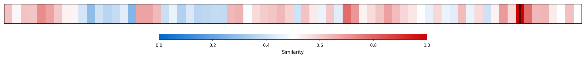
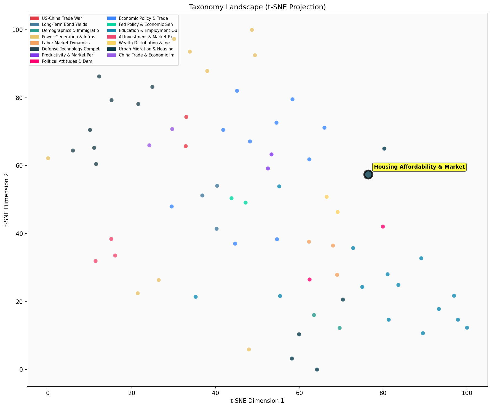

Description
This subcluster examines housing market dynamics through quantitative analysis of home prices, affordability metrics, and demographic trends in homeownership. Articles predominantly feature Federal Reserve data, real estate market statistics, and academic research tracking price movements, buyer age demographics, and affordability ratios over time. The focus centers on measurable housing market indicators including median home prices, first-time buyer statistics, regional price variations, and historical comparisons of housing costs relative to income. Content typically presents empirical data from central banks, real estate organizations, and economic research institutions, emphasizing statistical trends rather than policy prescriptions or qualitative housing experiences.
Similarity to All 70 Subclusters
Each cell represents a subcluster. Color intensity shows similarity (blue=low, red=high). Black line marks current subcluster position.
Relationship to Primary Clusters
Average similarity to each of the 15 primary clusters. Larger area = stronger relationship to that cluster.
Taxonomy Landscape
All 70 subclusters positioned by similarity (t-SNE). Current subcluster highlighted with label. Click to enlarge.
Network Connections
Current subcluster at center, connected to related subclusters. Line thickness = similarity strength.
Most Representative Articles
-
1. US real house prices have shown a significant upward trend, with a 15% increase from 2020 to 2023, d
-
2. Jason Thomas argues that high rates driven by the AI buildout and US fiscal policy are “crowding out
-
3. Housing affordability has fallen to levels last seen in the 1980s, driven primarily by high home pri
-
4. A @DallasFed analysis suggests housing affordability in the US will likely improve gradually through
-
5. In real terms, the Case-Shiller national index (blue line) is 4.6% under its recent peak and 11% abo
Edge Cases (Boundary Articles)
-
1. Denmark is seeking to better integrate non-Danes into Danish society by demolishing social housing iThis article is borderline because while it involves housing policy (social housing demolition), it focuses on immigration integration and social policy rather than market pricing, affordability metrics, or homeownership trends that define the cluster. The content is more aligned with social policy and demographic integration issues than with the quantitative housing market analysis that characterizes this cluster.
-
2. A third of US under-30s voted Republian in the 2022 mid-terms, relative to 40% support for CanadianThis article is borderline because while it mentions housing affordability as a political issue, it primarily focuses on comparative voting patterns and political preferences among young demographics across different countries, rather than analyzing actual housing market data, pricing trends, or affordability metrics. The content is more aligned with political analysis and demographic voting behavior than with the quantitative housing market dynamics that define the assigned cluster.
-
3. Jonathon Sine argues China “is moving beyond its breakneck industrial prime, facing similar dilemmasThis article discusses China's economic transition and educational demographics but contains no content about housing prices, affordability metrics, or homeownership trends that would align with the assigned cluster. The article is borderline because it focuses on China's broader economic development phase and educational statistics rather than housing market dynamics, making it a better fit for the China Trade & Export Growth cluster which deals with China's economic patterns.
Original Dendrogram